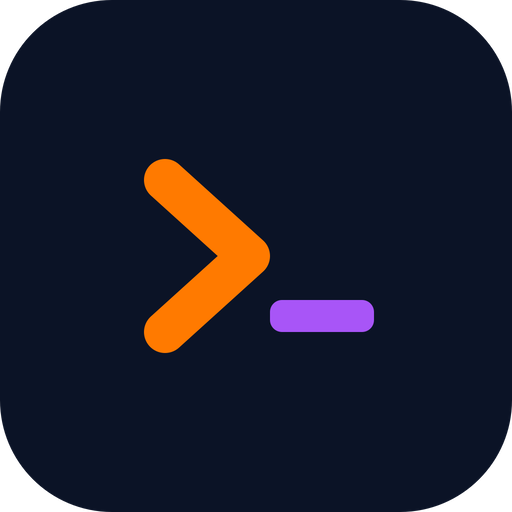

bot-hq is a desktop app for running AI-assisted coding sessions you can actually trust — a builder, an adversarial reviewer, and a project knowledge base, all under your control.
For developers & teams who want the speed of AI coding without giving up oversight. You stay the conductor.
macOS · Linux · Windows — free & open source (MIT)
The problem
It can confidently ship a plausible-looking bug, forget your project's conventions, or rewrite a file you didn't want touched. bot-hq is built around three ideas that fix that.
Real review catches what the author misses — especially when the reviewer runs a different model and gives a genuine second opinion instead of an echo.
Your conventions, gotchas, and project memory live in one place the agents read before they start — so they begin informed, not cold.
Pushes, risky commands, and flagged problems pause for your approval. Everything else just flows. You decide when work is done.
The duo you orchestrate
Every session spawns two agents with distinct jobs — and a hard boundary between them. The reviewer literally cannot edit files.
Writes code, runs commands, makes commits. Your AI pair-programmer doing the actual work in the repo.
Reads Brian's work and pushes back adversarially. Write tools are blocked at the source — review only, no surprises.
Give the task, answer what the agents park for you, approve the steps that need a human, call it done. They don't run off on their own.
Why two models? Rain can run on a different model than Brian. A reviewer that doesn't share the author's blind spots catches more — cross-model diversity buys a real second opinion instead of an echo chamber.
How a session flows
Every substantial task walks through four phases. Each one leaves behind a short write-up you can open — so you read the agents' own account instead of scrolling back through chat.
Read the code, the docs, your project notes. Gather facts — nothing changes yet.
Brian proposes the approach and tradeoffs; Rain reviews it before any code is written.
Brian produces the work — the actual edits, commits, and commands.
Check the result against the plan: run tests, read output, proof-read adversarially.
The session view has an I / P / A / V tab for each phase, holding that phase's session document. The Apply tab also renders a live, color-coded git diff of the work — so you can eyeball the real changes at a glance. IPAV isn't bureaucracy: it's how an AI change is stopped from shipping on momentum.
The part most AI tools are missing
A curated knowledge base your agents read before they start working — the things that aren't in the code, that a fresh assistant would never know.
You curate it in a dedicated tab; agents read it on demand and only ever write back in one narrow, audited way. The knowledge base stays yours.
Guardrails
bot-hq is the policy layer. Enforcement runs at two layers (the agents are told to check, and git hooks enforce it independently), so a guardrail holds even if an agent's attention drifts.
Pushes can pause for a one-click Approve / Reject, so nothing reaches your remote without you.
When Rain flags a real problem as blocking, Brian can't commit over it until it's resolved or explicitly rebutted.
Gate specific commands by keyword so they ask before running — and isolate each session in its own git worktree so parallel work never collides.
Get started
Download the desktop app for your platform, or build it from source. You'll also need the claude-code CLI, which bot-hq drives under the hood.